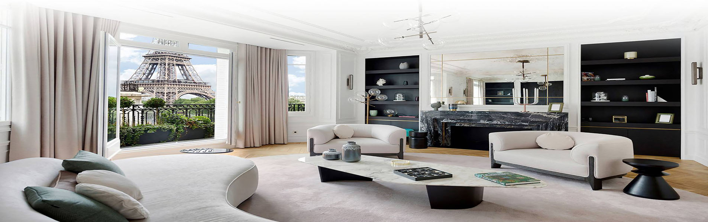
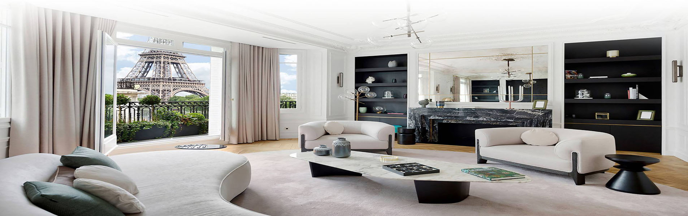
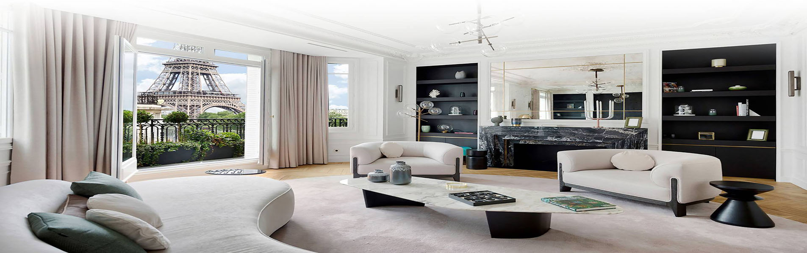
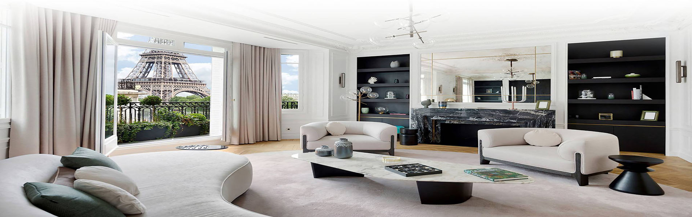

 


555.000 €
Coup de coeur assuré pour cette belle maison individuelle à 5 km du
beffroi d'Arras, tout confort bâtie sur 1032 m2 offrant 263 m2
habitables: Salon-séjour en open space (89.50 m2), 4 chambres dont 1
suite parentale, buanderie, SPA + piscine (chauffée), jardin,
garage. Bien d'exception !!!
Contactez M. GENARDIZ au
00 65 87 99 00

2.999.999 €
Château avec importante capacité hôtelière. Transformé dans les
années 2000 en Hôtel-restaurant de luxe, le site comprend 27
chambres et suites, salles de réception pour le restaurant et
pavillons pour organiser des manifestations telles que mariages,
séminaires … Un bâtiment offre un espace détente avec piscine,
balnéo, salles de massage, sauna …
Contactez M. GENARDIZ au
00 65 87 99 00

2.730.000 €
Proche Valenciennes, un superbe château du XVIIIème siècle
complètement restauré de façon contemporain entre 2009 et 2013. Il
comprend des douves en eau, sur terrain de 9800m², en zone verte et
mitoyen d'un bois de 35 hectares. Prestation d'excellence. Secteur
calme.
Contactez M. GENARDIZ au
00 65 87 99 00

980.000 €
Proximité golf d'Arras, bâti sur une parcelle d'environ 4000m²
entourée d'une rivière et disposant d'une écluse, cet ancien moulin
du XVème siècle entièrement rénové dispose de 350m² habitables.
Cheminée feu de bois, bureau avec terrasse surplombant la Scarpe,
grande mezzanine, 2 dressings, belles poutres apparentes.
Contactez M. GENARDIZ au
00 65 87 99 00

748.000 €
Multiples possibilités pour ce domaine d'exception rénové en 2015.
Vous ne pourrez qu'être séduit par ses 495m² se décomposant d'une
salle de restaurant, ses 23 pièces, 9 chambres, 11 WC,... Vaste
terrasse avec vue panoramique sur le plan d'eau alimenté par des
sources, le tout bordé par la Canche...
Contactez M. GENARDIZ au
00 65 87 99 00

565.920 €
Vous serez conquis par ses volumes, son salon-salle à manger de 72
m² avec ses 3 cheminées, parquet, boiseries, marbre. Maison de 1870
ayant gardé tout son charme d'origine de 330 m². 4 grandes chambres
de 18 à 31 m². Parcelle de plus de 2 700 m².
Contactez M. GENARDIZ au
00 65 87 99 00

680.000 €
Dans un cadre verdoyant, au calme, une très belle propriété du
XVIIème siècle. Idéale pour une grande maison familiale, la
propriété dispose de 5000m² de jardins. Ce manoir offre une surface
habitable de 300m², 2 salons, une salle de réception ainsi que 5
chambres. Un grenier entièrement aménageable de 150m² vient
compléter l'habitation principale. Une cave de 150 m² donne accès
aux souterrains d'époque.
Contactez M. GENARDIZ au
00 65 87 99 00

748.000 €
Fermette entièrement renovée en 2007, construite sur 3700 m²
entièrement clos, d'une surface habitable de 230 m² et d'une PISCINE
INTÉRIEURE de 120 m². Dans un cadre verdoyant et reposant, alliant
harmonieusement le charme de la vieille pierre et le contemporain.
En résumé, vous rêvez d'une maison familiale, idéalement conçue pour
vous faciliter le quotidien.
Contactez M. GENARDIZ au
00 65 87 99 00

815.000 €
Cambrai Centre Ville pour une magnifique et atypique demeure de
charme. Les matériaux authentiques ont été préservés ce qui lui
confère un charme ancien incontestable. Un très bel escalier en fer
forgé distribue au 1er étage. Au 3ème étage, Une grande chambre
esprit loft avec salle d'eau. Exceptionnelles caves sur 3
niveaux...
Contactez M. GENARDIZ au
00 65 87 99 00

722.800 €
Venez découvrir cette magnifique maison de 250 m² et 9 pièces, en
plein coeur d'Arras. Vous serez saisis par le charme et le cachet de
son sublime hall d'entrée. Je vous invite à vous laisser envoûter
par un ravissant salon d'été de 16 m² dont la grande baie vitrée
vous offrira une vue imprenable sur un splendide Roof-Top de 45 m².
Maison entièrement rénovée.
Contactez M. GENARDIZ au
00 65 87 99 00